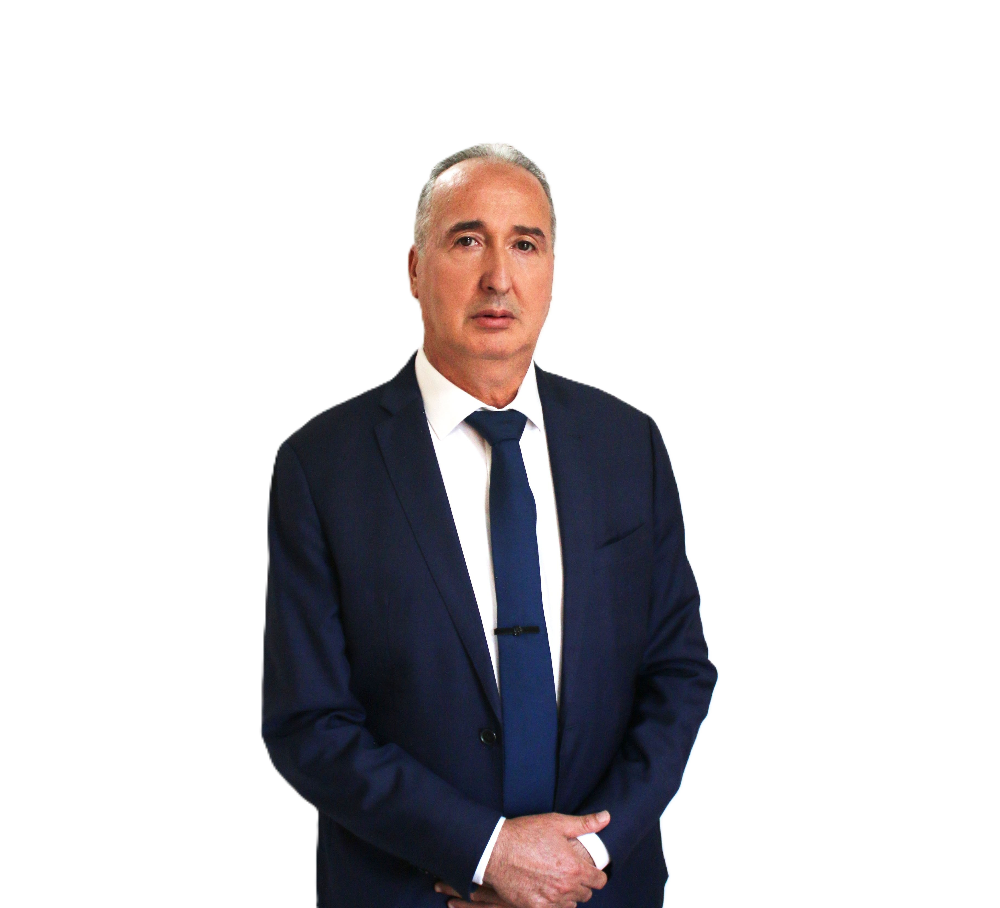

02 جويلية 2026
المترشح رقم 04 · القائمة رقم 2
توفيق شوشار
Toufik Chouchar
مهندس دولة
Ingénieur d'État
|
نائب · Député
تمكين الشباب · Empowerment jeunes
تحفيز الاقتصاد · Économie
التحول الرقمي · Digital
وعي بيئي · Écologie
صناعة دقيقة · Instrumentation
تمكين الشباب · Empowerment
تمكين الشباب
Autonomisation des jeunes
التحول الرقمي
Transformation numérique
تحفيز الاقتصاد
Stimuler l'économie
وعي بيئي
Conscience environnementale
العزم الوطني
Détermination Nationale · Vision pour l'Algérie 2030
الخبرة في التسيير · Expertise en gestion80%
تبادل الكفاءات مع الشباب · Échanges compétences jeunes90%
تطوير اليد العاملة المحلية · Développement main d'œuvre locale95%
تطوير الأعمال في الجزائر · Développement business Algérie95%
🇩🇿 البلد · Pays
سيادة وطنية جزائر جديدة تنمية مستدامة
Souveraineté nationale · Algérie nouvelle · Développement durable
👥 الشعب · Peuple
وحدة وطنية تضامن اجتماعي مواطنة حقة
Unité nationale · Solidarité sociale · Véritable citoyenneté
🪔 الهوية · Identité
أصالة جزائرية تنوع ثقافي انتماء عميق
Authenticité algérienne · Diversité culturelle · Appartenance profonde